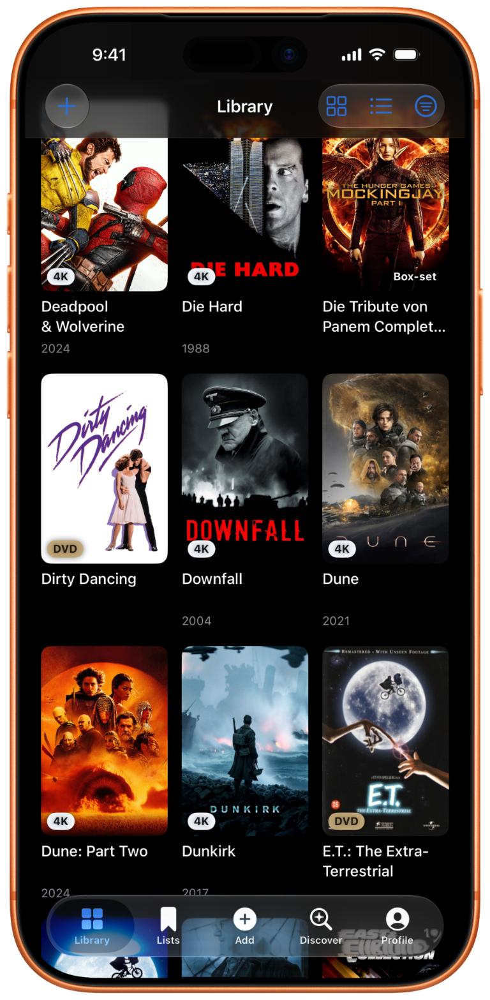
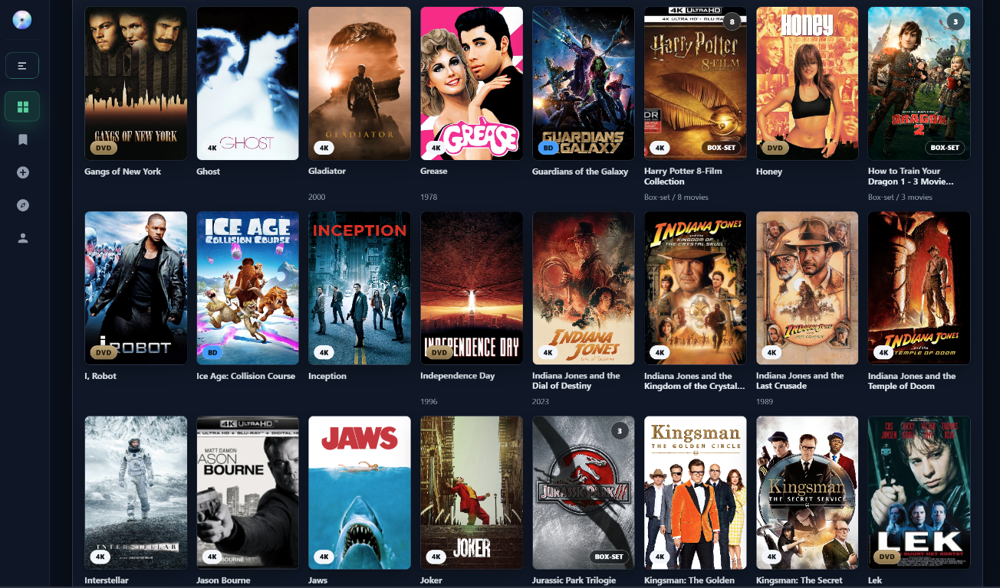
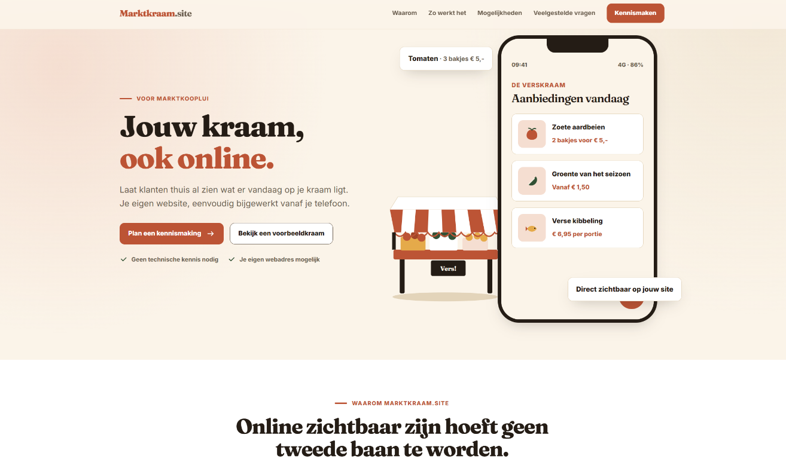

Software that stays out of your way.
Flux76 builds focused apps and web tools for people who want clarity, control and less digital friction. That includes privacy-minded software for personal collections and practical tools for entrepreneurs — designed to support the work without becoming more work. We choose native, web or self-hosted technology based on what fits the problem, keep data and ownership transparent, and avoid unnecessary complexity.
One collection. Two ways to use it.
Use DiscVault as a standalone app on iPhone and iPad, or run the full self-hosted platform on your own infrastructure.

DiscVault for iOS
Scan and organise your 4K UHD, Blu-ray and DVD collection. No server required.
Explore the iOS app
DiscVault
Run the complete collection platform yourself, with a desktop-first library, richer controls and room to grow.
Explore the self-hosted versionMore focused apps and tools are on the way.
Your stall, online too.
Give customers a clear view of what's on your stall today, with a website you can easily update from your phone.
- Your own recognisable website
- Update offers from your phone
- No technical knowledge required



Sint Maarten, mapped.
An interactive map of the neighbourhood that shows which houses are happy to receive Halloween visitors and which would rather not.
- Installable as an app, works offline
- Residents update their own house, you approve
- Secure admin with passkeys, self-hosted
Software should make room for the work.
Each app solves a clear problem without piling on distractions.
We use only the data a product needs and make clear what happens to it and who controls it.
Native, web or self-hosted — chosen for the job, not for the trend.
Year-versioned releases and clear upgrade paths — software you can keep.